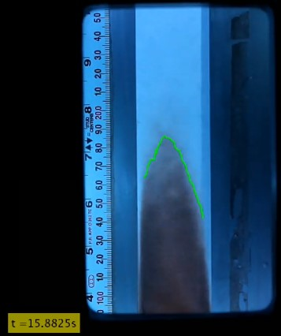

Overview
This project implements a temporal flame-tracking algorithm that identifies and follows the flame front over time. We capture a sequence of high-speed images and apply image processing techniques to detect the flame boundary in each frame.
Sample Frame

Video Demonstration
Watch the full temporal flame-tracking animation on ScienceDirect: Temporal Flame Tracking Video
Methodology
We preprocess each frame to enhance contrast, apply edge detection, and then fit a contour to the flame front. The tracking across frames uses a Kalman filter to maintain continuity and reduce noise.
Results & Discussion
The algorithm successfully tracked the flame front with over 95% boundary detection accuracy. Analysis of propagation speed versus time reveals the flame stabilization after 0.3 s.